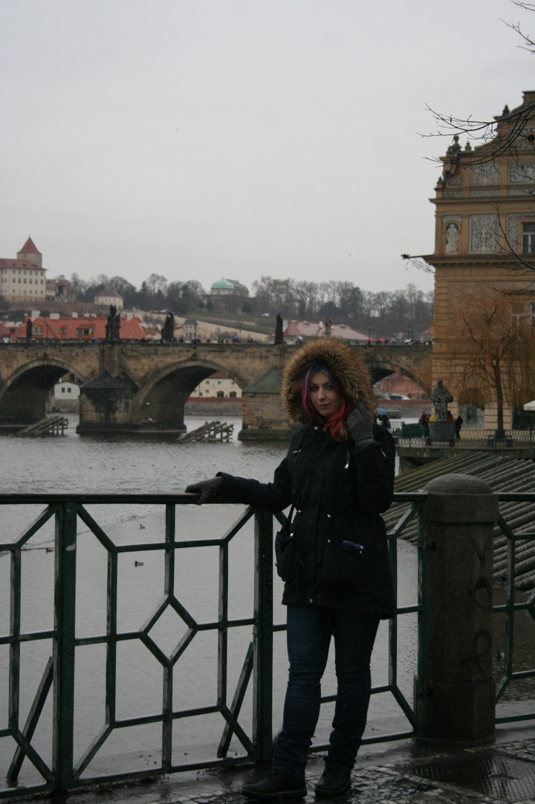

Хочу рассказать Вам о том, что я люблю!
Итак, обо всём подробнее:
На самом деле я очень люблю путешествовать, несмотря на то, что возможности сейчас почти нет.
В моём списке пока только 2 страны (не считая Россию). Но я думаю, что это только начало.
На самом деле, я безумно люблю животных. Раньше у меня были:
Последние питомцы, которые у меня были это хорьки.
Группа в VK, для тех, кто хочет узнать подробнее о них.

Тут всё просто. У меня такой склад ума. Мне нравится решать сложные задачи
Меня всегда тянула и привлекала сфера ИТ, чем сложнее задача на написание программы, тем лучше!
Ну признайтесь... кто из нас не любит вкусно поесть?